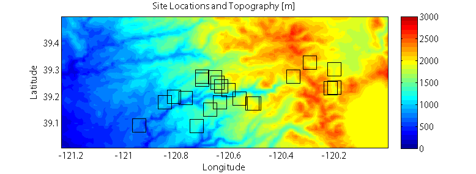

Homework 8#
Problem 1: Air Temperature Observations in Complex Terrain#
Download the file iButtons_2008-2010.mat, and the air-temperature-svd.ipynb jupyter notebook. The data file contains hourly air temperature (°C) observations from 21 distributed sensors (called iButtons) located around the watershed of the North Fork of the American River in the Sierra Nevada of California, recorded over a period from September 2007 to July 2010. It also contains information about the sites’ names, numbers, latitude and longitude coordinates, and elevations. See the figure below for a map of the sites.

Map figure: iButton locations and topographic shading. The sites are located around the American River canyon on the west slope of the Sierra Nevada Mountains in California. Lake Tahoe is the large flat area in the southeast portion of the map.
Optional: Download North_Fork_American_River_CA_18020128.json to add the American River watershed outline to your plots.
A. (1) Plot the temperature observations (AIR_TEMPERATURE) at all sites on one plot over time; use the title, xlabel, and ylabel commands to label your plot and its axes. Use xlim to zoom in and examine the data at finer scales. Qualitatively describe the dataset, including its minimum and maximum values, its major variability in time, and how correlated the stations appear to be with one another. (you do not need to actually compute correlation coefficents here, just describe it qualitatively)
B. (1) Use the command: [U,S,V] = scipy.linalg.svd(AIR_TEMPERATURE_ZEROMEAN, full_matrices=False) (read the documentation for this function here) to calculate the PCs, variances, and EOFs, respectively, of AIR_TEMPERATURE_ZEROMEAN (this is a version of the dataset where the mean temperature at each station has been subtracted out). Describe, qualitatively, how the variance is distributed among the patterns; how much is described by the leading pattern? By the second pattern?
C. (1) Plot the leading pattern’s spatial weights (EOF) against latitude and longitude. Describe the first pattern’s spatial weights’ sign and variability.
D. (1.5) Plot the leading pattern’s temporal weights (PCs) over time. When are they positive and when are they negative? Consider the PCs’ sign and magnitude, and consider the sign of the EOF in Part C. When does this pattern generate warmer-than-normal temperatures? What about colder than normal temperatures?
E. (1.5) Repeat C) and D) for the 2nd-leading pattern. Interpret physically what the first two patterns may represent. How much of the dataset is described by the first two modes of variability?
Problem 2: Timeseries Analysis#
Following lab 8-2, use Fourier Analysis to determine the dominant frequencies and periods of oscilliation of the water level data provided waterlevel.mat.
A. (1.5) Plot the timeseries and the spectral density of the data.
B. (1.5) Identify whether the data contains noise in specific frequency ranges (e.g. “red noise”) or across all frequencies (e.g. “white noise”), and at what frequency or frequencies is most of the variation in the timseries.
C. (1) Based on your analysis, where (in what type of environment) do you think this water level was measured?
Problem 3: Project Update (CEWA 565)#
Upload this part of the assignment as a separate PDF or Word document to “Homework 8 Project Update” on Canvas.
Submit an updated draft abstract, introduction section, data and methods sections, as well as a draft results section. In the draft results section, present the graphs and plots that you plan to include in your final project presentation and paper. Create nice captions to go with the plots, and write text to explain, in a straight-forward way, what the data analysis and plots show. At this point, you don’t have to explain why, just objectively present the results of your analysis and tests.
(the rubric for the final report is available for your reference here)